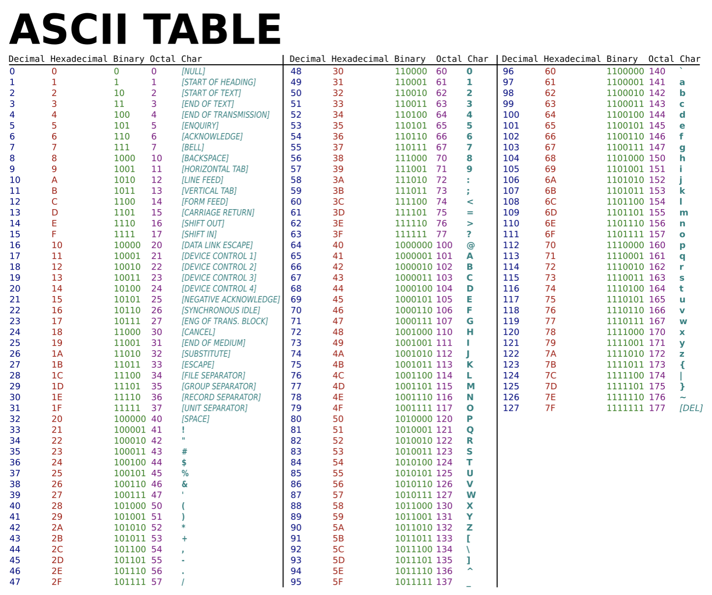

<!DOCTYPE html>
<html lang="en-us">
  <head>
     <meta charset="UTF-8">
<meta name="viewport" content="width=device-width, initial-scale=1">
<meta http-equiv="X-UA-Compatible" content="IE=edge">
<meta name="generator" content="Hugo 0.83.1 with theme Tranquilpeak 0.4.8-BETA">
<meta name="author" content="Đặng Tuấn Dương">
<meta name="keywords" content="nodejs, buffer, binary data, ascii">
<meta name="description" content="JS không cung cấp công cụ để làm việc trực tiếp với binary data (dữ liệu lưu dưới dạng mã nhị phân). Việc này không gây quá nhiều ảnh hưởng ở môi trường trình duyệt. Tuy nhiên, trên server, có rất nhiều tác vụ phải xử lí binary data. Nếu chỉ dùng những gì JS cung cấp thì việc xử lí sẽ rất chậm, do vậy Nodejs đã phát triển và cung cấp 1 công cụ khác để giải quyết vấn đề này. Đó là Buffer.">


<meta property="og:description" content="JS không cung cấp công cụ để làm việc trực tiếp với binary data (dữ liệu lưu dưới dạng mã nhị phân). Việc này không gây quá nhiều ảnh hưởng ở môi trường trình duyệt. Tuy nhiên, trên server, có rất nhiều tác vụ phải xử lí binary data. Nếu chỉ dùng những gì JS cung cấp thì việc xử lí sẽ rất chậm, do vậy Nodejs đã phát triển và cung cấp 1 công cụ khác để giải quyết vấn đề này. Đó là Buffer.">
<meta property="og:type" content="article">
<meta property="og:title" content="Nodejs Core Module: Buffer (P2)">
<meta name="twitter:title" content="Nodejs Core Module: Buffer (P2)">
<meta property="og:url" content="/2021/05/nodejs-core-module-buffer-p2/">
<meta property="twitter:url" content="/2021/05/nodejs-core-module-buffer-p2/">
<meta property="og:site_name" content="duongdt&#39;s blog">
<meta property="og:description" content="JS không cung cấp công cụ để làm việc trực tiếp với binary data (dữ liệu lưu dưới dạng mã nhị phân). Việc này không gây quá nhiều ảnh hưởng ở môi trường trình duyệt. Tuy nhiên, trên server, có rất nhiều tác vụ phải xử lí binary data. Nếu chỉ dùng những gì JS cung cấp thì việc xử lí sẽ rất chậm, do vậy Nodejs đã phát triển và cung cấp 1 công cụ khác để giải quyết vấn đề này. Đó là Buffer.">
<meta name="twitter:description" content="JS không cung cấp công cụ để làm việc trực tiếp với binary data (dữ liệu lưu dưới dạng mã nhị phân). Việc này không gây quá nhiều ảnh hưởng ở môi trường trình duyệt. Tuy nhiên, trên server, có rất nhiều tác vụ phải xử lí binary data. Nếu chỉ dùng những gì JS cung cấp thì việc xử lí sẽ rất chậm, do vậy Nodejs đã phát triển và cung cấp 1 công cụ khác để giải quyết vấn đề này. Đó là Buffer.">
<meta property="og:locale" content="vi">

  
    <meta property="article:published_time" content="2021-05-09T00:00:00">
  
  
    <meta property="article:modified_time" content="2021-05-09T00:00:00">
  
  
  
  
    
      <meta property="article:tag" content="nodejs">
    
  


<meta name="twitter:card" content="summary">


  <meta property="og:image" content="/images/avatar.jpeg">
  <meta property="twitter:image" content="/images/avatar.jpeg">


    <title>Nodejs Core Module: Buffer (P2)</title>

    <link
      rel="icon"
      href="/images/avatar.jpeg"
    />
     

    <link rel="canonical" href="/2021/05/nodejs-core-module-buffer-p2/" />

    <link
      rel="stylesheet"
      href="https://cdnjs.cloudflare.com/ajax/libs/highlight.js/11.2.0/styles/default.min.css"
    />
    <script src="https://cdnjs.cloudflare.com/ajax/libs/highlight.js/11.2.0/highlight.min.js"></script>
    
    <script src="https://cdnjs.cloudflare.com/ajax/libs/highlight.js/11.2.0/highlight.min.js"></script>
    <script src="https://cdnjs.cloudflare.com/ajax/libs/highlight.js/11.2.0/languages/javascript.min.js"></script>

    
    <link
      rel="stylesheet"
      href="https://cdnjs.cloudflare.com/ajax/libs/font-awesome/4.7.0/css/font-awesome.min.css"
      integrity="sha256-eZrrJcwDc/3uDhsdt61sL2oOBY362qM3lon1gyExkL0="
      crossorigin="anonymous"
    />
    <link
      rel="stylesheet"
      href="https://cdnjs.cloudflare.com/ajax/libs/fancybox/2.1.4/jquery.fancybox.min.css"
      integrity="sha256-vuXZ9LGmmwtjqFX1F+EKin1ThZMub58gKULUyf0qECk="
      crossorigin="anonymous"
    />
    <link
      rel="stylesheet"
      href="https://cdnjs.cloudflare.com/ajax/libs/fancybox/2.1.4/helpers/jquery.fancybox-thumbs.min.css"
      integrity="sha256-SEa4XYAHihTcEP1f5gARTB2K26Uk8PsndQYHQC1f4jU="
      crossorigin="anonymous"
    />
    
    
    <link
      rel="stylesheet"
      href="/css/style-twzjdbqhmnnacqs0pwwdzcdbt8yhv8giawvjqjmyfoqnvazl0dalmnhdkvp7.min.css"
    />
    
        <script>
  hljs.highlightAll()
</script>

  </head>
</html>

  <body>
    <div id="blog">
      <header id="header" data-behavior="2">
  <i id="btn-open-sidebar" class="fa fa-lg fa-bars"></i>
  <div class="header-title">
    <a class="header-title-link" href="/">duongdt&#39;s blog</a>
  </div>
  
</header>

      <nav id="sidebar" data-behavior="2">
  <div class="sidebar-container">
    
      <div class="sidebar-profile">
        <a href="/#about">
          
        </a>
        <h4 class="sidebar-profile-name">Đặng Tuấn Dương</h4>
        
          <h5 class="sidebar-profile-bio"><a href="mailto:duongdt0291@gmail.com">duongdt0291@gmail.com</a></h5>
        
      </div>
    
    <ul class="sidebar-buttons">
      
  <li class="sidebar-button">
    
      <a class="sidebar-button-link " href="/posts">
    
      <i class="sidebar-button-icon fa fa-lg fa-home"></i>
      
      <span class="sidebar-button-desc">Trang chủ</span>
    </a>
  </li>

  <li class="sidebar-button">
    
      <a class="sidebar-button-link " href="/tags">
    
      <i class="sidebar-button-icon fa fa-lg fa-tags"></i>
      
      <span class="sidebar-button-desc">Thẻ thông tin</span>
    </a>
  </li>

  <li class="sidebar-button">
    
      <a class="sidebar-button-link " href="/#about">
    
      <i class="sidebar-button-icon fa fa-lg fa-user-circle"></i>
      
      <span class="sidebar-button-desc">Thông tin</span>
    </a>
  </li>


    </ul>
    <ul class="sidebar-buttons">
      

    </ul>
    <ul class="sidebar-buttons">
      

    </ul>
  </div>
</nav>

      

      <div id="main" data-behavior="2"
        class="
               hasCoverMetaIn
               ">
        <article class="post" itemscope itemType="http://schema.org/BlogPosting">
          
          
            <div class="post-header main-content-wrap text-left">
  
    <h1 class="post-title" itemprop="headline">
      Nodejs Core Module: Buffer (P2)
    </h1>
  
  
  <div class="postShorten-meta post-meta">
    
      <time itemprop="datePublished" datetime="2021-05-09T00:00:00Z">
        
  
  
  
  
    9 tháng 5 2021
  

      </time>
    
    
  </div>

</div>
          
          <div class="post-content markdown" itemprop="articleBody">
            <div class="main-content-wrap">
              <p>JS không cung cấp công cụ để làm việc trực tiếp với binary data (dữ liệu lưu dưới dạng mã nhị phân). Việc này không gây quá nhiều ảnh hưởng ở môi trường trình duyệt. Tuy nhiên, trên server, có rất nhiều tác vụ phải xử lí binary data. Nếu chỉ dùng những gì JS cung cấp thì việc xử lí sẽ rất chậm, do vậy Nodejs đã phát triển và cung cấp 1 công cụ khác để giải quyết vấn đề này. Đó là Buffer.</p>
<p>Tuy nhiên, trước khi xem Buffer là gì và được sử dụng thế nào, chúng ta cần tìm hiểu qua xem thế nào là dữ liệu lưu dưới dạng nhị phân nhé.</p>
<h3 id="binary-data">Binary Data</h3>
<p>Máy tính hiện tại lưu đủ thứ trên đời: văn bản, ảnh, video, chương trình, &hellip; Tuy nhiên, máy tính không nhìn vào các dữ liệu trên giống cách chúng ta nhìn chúng, mà thay vào đó, máy tính chỉ hiểu được 2 con số là 0 và 1, hay còn gọi là nhị phân (binary). Do vậy, mọi dữ liệu đều được chuyển sang dạng nhị phân (binary data) trước khi được máy tính lưu trữ hoặc xử lí.</p>
<p>Mỗi số 0 hoặc 1 sẽ được lưu bằng 1 bit. Bit là đơn vị lưu trữ nhỏ nhất của máy tính (1 Mb = 10000000 Byte; 1 Byte = 8bit).</p>
<p>Ví dụ số 5 sẽ được lưu trữ dưới dạng nhị phân là 101 (2^2 + 0 + 2^0 = 5). Nếu bạn nào không hiểu chỗ này thì có thể liên hệ trực tiếp với hệ thập phân, tức là con số chúng ta dùng hằng ngày, sẽ thấy nó rất dễ hiểu thôi: 921 = 9 * 10^2 + 2 * 10^1 + 1 * 10^0.</p>
<p>Tương tự với số, thì với văn bản, ảnh hay video, hay các kiểu file khác, máy tính cũng sẽ có những quy tắc để chuyển về dạng binary data. Chúng ta sẽ tìm hiểu qua về cách máy tính lưu trữ văn bản như thế nào nhé.</p>
<p>Bạn thử gõ dòng lệnh sau <code>&quot;a&quot;.charCodeAt(0)</code> xem kết quả ra bao nhiêu. 97 phải không nào? Để hiểu con số này ở đâu ra, chúng ta cần biết 2 khái niệm là bảng mã và hệ thống mã hóa.</p>
<ul>
<li><strong>Bộ ký tự</strong> (Character set): Là một bộ các ký tự đã được tiêu chuẩn hóa</li>
<li><strong>Hệ thống mã hóa</strong> (Encoding system): Là một tiêu chuẩn cho một cách thức mã hóa một chuỗi ký tự (của một bộ ký tự đã cho trước) thành chuỗi ngôn ngữ máy 0 và 1.</li>
</ul>
<p>Bộ kí tự ASCII, với hệ thống mã hóa của nó cùng tên là ASCII, được ra đời từ rất sớm và có thể biểu diễn được các chữ cái tiếng anh, số, và 1 số dấu đặc biệt (a-z, A-Z, 0–9, +, -, /, “, ! etc.) thông qua các con số từ 32 đến 127. Tức là ASCII dùng tối đa 7 bit (2^7 = 128) để biểu diễn các kí tự. Tuy nhiên trong thực tế các máy tính thường sử dụng 1 byte (8 bit) để dành cho các kí tự này (mặc định thêm số 0 ở trước).</p>
<p></p>
<p>Quay lại con số 97 ở trên, mọi người nhìn vào cột decimal (số thập phân) tra đến con số 97 sẽ thấy tương ứng với chữ cái &ldquo;a&rdquo;, và cách máy tính lưu trữ ở mã nhị phân sẽ là 01100001.</p>
<p>Bảng mã này cũng giải thích tại sao khi so sánh chuỗi bằng dấu &gt; hoặc &lt; thì &ldquo;a&rdquo; &gt; &ldquo;B&rdquo; ra kết quả là true, vì 97 &gt; 66 là đương nhiên rồi.</p>
<p>Ngày nay, bộ mã được sử dụng phổ biến nhất đó là Unicode với phương thức mã hóa là utf-8 (hoặc utf-16). Nó chứa hầu hết các kí tự ở đủ mọi loại ngôn ngữ trên thế giới, ví dụ các chữ ơ ơ của tiếng việt chẳng hạn. Về bảng mã kí tự cũng như cách mã hóa, mình sẽ đi sâu hơn ở 1 bài viết nào đó trong tương lai, khi mình đã có 1 cái nhìn rõ ràng hơn.</p>
<p>Qua những ví đụ ở trên, mình hi vọng các bạn đã hiểu sơ qua cách máy tính lưu dữ liệu dưới dạng nhị phân rồi. Và để làm việc với các dữ liệu dạng này, Nodejs cung cấp cho chúng ta 1 công cụ. Đó là Buffer.</p>
<h3 id="buffer">Buffer</h3>
<p>Theo <a href="https://nodejs.org/dist/latest/docs/api/buffer.html#buffer_buffer">định nghĩa</a> ở trang chủ của Nodejs, Buffer là 1 object đại diện cho 1 chuỗi bytes có độ dài cố định.</p>
<p>Buffer được sử dụng rất nhiều trong các module trong Nodejs. Ví dụ:</p>
<div class="highlight"><pre style="color:#f8f8f2;background-color:#272822;-moz-tab-size:4;-o-tab-size:4;tab-size:4"><code class="language-jsx" data-lang="jsx"><span style="color:#75715e">// text.txt
</span><span style="color:#75715e"></span><span style="color:#a6e22e">Hello</span> <span style="color:#a6e22e">World</span><span style="color:#f92672">!</span>

<span style="color:#75715e">// buffer.ts
</span><span style="color:#75715e"></span><span style="color:#66d9ef">import</span> <span style="color:#a6e22e">fs</span> <span style="color:#a6e22e">from</span> <span style="color:#e6db74">&#39;fs&#39;</span>
<span style="color:#66d9ef">import</span> <span style="color:#a6e22e">path</span> <span style="color:#a6e22e">from</span> <span style="color:#e6db74">&#39;path&#39;</span>

<span style="color:#75715e">// đọc file text.txt cùng thư mục với file hiện tại
</span><span style="color:#75715e"></span><span style="color:#a6e22e">fs</span>.<span style="color:#a6e22e">readFile</span>(<span style="color:#a6e22e">path</span>.<span style="color:#a6e22e">join</span>(<span style="color:#a6e22e">__dirname</span>, <span style="color:#e6db74">&#39;event-emitter.ts&#39;</span>), (<span style="color:#a6e22e">err</span>, <span style="color:#a6e22e">data</span>) =&gt; {
	<span style="color:#75715e">// biến data có kiểu dữ liệu là Buffer
</span><span style="color:#75715e"></span>	<span style="color:#a6e22e">console</span>.<span style="color:#a6e22e">log</span>(<span style="color:#a6e22e">data</span>) <span style="color:#75715e">// &lt;Buffer 48 65 6c 6c 6f 20 57 6f 72 6c 64 21&gt;
</span><span style="color:#75715e"></span>
  <span style="color:#a6e22e">console</span>.<span style="color:#a6e22e">log</span>(<span style="color:#a6e22e">data</span>.<span style="color:#a6e22e">toString</span>()) <span style="color:#75715e">// Hello World!
</span><span style="color:#75715e"></span>})
</code></pre></div><p>Kết quả của dòng lệnh <code>console.log(data)</code> thể hiện data là 1 object có kiểu Buffer. 48 là số hệ 16, và khi chuyển sang hệ thập phân sẽ là 4 * 16 + 8 = 72. Các bạn có thể xem lại bảng ASCII ở trên, chữ cái được biểu diễn bởi số 72 ở hệ thập phân chính là &ldquo;H&rdquo;. Tương tự 65 hệ 16 tương ứng 6 * 16 + 5 = 101, biểu diễn cho chữ &ldquo;e&rdquo;. <code>toString</code> là 1 phương thức của Buffer để in ra dữ liệu dạng text mà buffer đang lưu.</p>
<p>Các bạn cũng có thể trực tiếp tạo 1 Buffer như sau:</p>
<div class="highlight"><pre style="color:#f8f8f2;background-color:#272822;-moz-tab-size:4;-o-tab-size:4;tab-size:4"><code class="language-jsx" data-lang="jsx"><span style="color:#66d9ef">const</span> <span style="color:#a6e22e">bufferFromStr</span> <span style="color:#f92672">=</span> <span style="color:#a6e22e">Buffer</span>.<span style="color:#a6e22e">from</span>(<span style="color:#e6db74">&#39;Hello World!&#39;</span>, <span style="color:#e6db74">&#39;utf-8&#39;</span>)
<span style="color:#a6e22e">console</span>.<span style="color:#a6e22e">log</span>(<span style="color:#a6e22e">bufferFromStr</span>) <span style="color:#75715e">// &lt;Buffer 48 65 6c 6c 6f 20 57 6f 72 6c 64 21&gt;
</span><span style="color:#75715e"></span><span style="color:#a6e22e">console</span>.<span style="color:#a6e22e">log</span>(<span style="color:#a6e22e">bufferFromStr</span>.<span style="color:#a6e22e">toString</span>()) <span style="color:#75715e">// Hello World!
</span><span style="color:#75715e"></span>
<span style="color:#66d9ef">const</span> <span style="color:#a6e22e">bufferFromArrayHex</span> <span style="color:#f92672">=</span> <span style="color:#a6e22e">Buffer</span>.<span style="color:#a6e22e">from</span>([
  <span style="color:#ae81ff">0x48</span>, <span style="color:#ae81ff">0x65</span>, <span style="color:#ae81ff">0x6c</span>, <span style="color:#ae81ff">0x6c</span>, <span style="color:#ae81ff">0x6f</span>, <span style="color:#ae81ff">0x20</span>, <span style="color:#ae81ff">0x57</span>, <span style="color:#ae81ff">0x6f</span>, <span style="color:#ae81ff">0x72</span>, <span style="color:#ae81ff">0x6c</span>, <span style="color:#ae81ff">0x64</span>, <span style="color:#ae81ff">0x21</span>,
])
<span style="color:#75715e">// Dành cho các bạn chưa biết thì cú pháp 0xNN để biểu diễn số ở hệ 16,
</span><span style="color:#75715e">// với 0x để đánh dấu rằng những chữ cái tiếp theo là số hệ 16.
</span><span style="color:#75715e"></span><span style="color:#a6e22e">console</span>.<span style="color:#a6e22e">log</span>(<span style="color:#a6e22e">bufferFromArrayHex</span>.<span style="color:#a6e22e">toString</span>()) <span style="color:#75715e">// Hello World!
</span><span style="color:#75715e"></span>
<span style="color:#75715e">// Tạo 1 buffer rỗng, chiếm số bytes cố định
</span><span style="color:#75715e"></span><span style="color:#66d9ef">const</span> <span style="color:#a6e22e">emptyBuffer</span> <span style="color:#f92672">=</span> <span style="color:#a6e22e">Buffer</span>.<span style="color:#a6e22e">alloc</span>(<span style="color:#ae81ff">12</span>)
<span style="color:#a6e22e">console</span>.<span style="color:#a6e22e">log</span>(<span style="color:#a6e22e">emptyBuffer</span>) <span style="color:#75715e">// &lt;Buffer 00 00 00 00 00 00 00 00 00 00 00 00&gt;
</span></code></pre></div><p>Để ghi đè dữ liệu lên buffer, các bạn có thể sử dụng phương thức write như sau:</p>
<div class="highlight"><pre style="color:#f8f8f2;background-color:#272822;-moz-tab-size:4;-o-tab-size:4;tab-size:4"><code class="language-jsx" data-lang="jsx"><span style="color:#a6e22e">emptyBuffer</span>.<span style="color:#a6e22e">write</span>(<span style="color:#e6db74">&#39;Hello there. How are you?&#39;</span>)
<span style="color:#a6e22e">console</span>.<span style="color:#a6e22e">log</span>(<span style="color:#a6e22e">emptyBuffer</span>.<span style="color:#a6e22e">toString</span>()) <span style="color:#75715e">// Hello there.
</span></code></pre></div><p>Lưu ý là Buffer là chuỗi bytes có độ dài cố định, vậy nên bạn không thể ghi quá số byte khởi tạo ban đầu. Do vậy, ở ví dụ trên, buffer không thể chứa được đoạn &ldquo;How are you?&rdquo;.</p>
<p>Trên đây chỉ là những thông tin ở mức cơ bản mình tìm hiểu để có thể hiểu hơn khi làm việc với Buffer. Nếu có gì sai sót, mọi người nhớ comment góp ý để bài viết của mình ngày càng hoàn thiện hơn nhé. Hẹn gặp lại mọi người ở bài viết tiếp theo.</p>
<p>Tham khảo:</p>
<ul>
<li><a href="https://www.codehub.com.vn/Ban-Da-Biet-May-Tinh-Luu-Du-Lieu-Nhu-The-Nao-Chua">https://www.codehub.com.vn/Ban-Da-Biet-May-Tinh-Luu-Du-Lieu-Nhu-The-Nao-Chua</a></li>
<li><a href="https://ruanmartinelli.com/posts/a-complete-guide-to-buffers">https://ruanmartinelli.com/posts/a-complete-guide-to-buffers</a></li>
<li><a href="https://www.freecodecamp.org/news/do-you-want-a-better-understanding-of-buffer-in-node-js-check-this-out-2e29de2968e8/">https://www.freecodecamp.org/news/do-you-want-a-better-understanding-of-buffer-in-node-js-check-this-out-2e29de2968e8/</a></li>
<li><a href="https://viblo.asia/p/bai-3-stream-va-buffer-trong-nodejs-ban-da-nam-duoc-nhung-khai-niem-nay-m68Z0W4XKkG">https://viblo.asia/p/bai-3-stream-va-buffer-trong-nodejs-ban-da-nam-duoc-nhung-khai-niem-nay-m68Z0W4XKkG</a></li>
<li><a href="https://nodejs.org/dist/latest/docs/api/buffer.html">https://nodejs.org/dist/latest/docs/api/buffer.html</a></li>
<li><a href="https://medium0.com/@apiltamang/unicode-utf-8-and-ascii-encodings-made-easy-5bfbe3a1c45a">https://medium.com/@apiltamang/unicode-utf-8-and-ascii-encodings-made-easy-5bfbe3a1c45a</a></li>
<li><a href="https://www.joelonsoftware.com/2003/10/08/the-absolute-minimum-every-software-developer-absolutely-positively-must-know-about-unicode-and-character-sets-no-excuses/">https://www.joelonsoftware.com/2003/10/08/the-absolute-minimum-every-software-developer-absolutely-positively-must-know-about-unicode-and-character-sets-no-excuses/</a></li>
<li><a href="https://kipalog.com/posts/Unicode-la-charset--UTF8--UTF16-la-phuong-thuc-Encode-Decode">https://kipalog.com/posts/Unicode-la-charset&ndash;UTF8&ndash;UTF16-la-phuong-thuc-Encode-Decode</a></li>
</ul>

              
            </div>
          </div>
          <div id="post-footer" class="post-footer main-content-wrap">
            
              
                
                
                  <div class="post-footer-tags">
                    <span class="text-color-light text-small">THẺ ĐÁNH DẤU</span><br/>
                    
<a
  class="tag tag--primary tag--small"
  href="/tags/nodejs/"
  >nodejs</a
>


                  </div>
                
              
            
            <script
  src="https://utteranc.es/client.js"
  repo="duongdt0291/duongdt0291.github.io"
  issue-term="pathname"
  theme="github-light"
  label="Comment"
  crossorigin="anonymous"
  async
></script>

            <div class="post-actions-wrap">
  
      <nav >
        <ul class="post-actions post-action-nav">
          
            <li class="post-action">
              
                <a class="post-action-btn btn btn--default tooltip--top" href="/2021/05/nodejs-core-module-events-p1/" data-tooltip="Nodejs Core Module: Events (P1)">
              
                  <i class="fa fa-angle-left"></i>
                  <span class="hide-xs hide-sm text-small icon-ml">Trước</span>
                </a>
            </li>
            <li class="post-action">
              
                <a class="post-action-btn btn btn--default tooltip--top" href="/2021/05/design-pattern-101-builder-pattern-p1/" data-tooltip="Design Pattern 101: Builder Pattern (P1)">
              
                  <span class="hide-xs hide-sm text-small icon-mr">Tiếp</span>
                  <i class="fa fa-angle-right"></i>
                </a>
            </li>
          
        </ul>
      </nav>
    <ul class="post-actions post-action-share" >
      
        <li class="post-action hide-lg hide-md hide-sm">
          <a class="post-action-btn btn btn--default btn-open-shareoptions" href="#btn-open-shareoptions">
            <i class="fa fa-share-alt"></i>
          </a>
        </li>
        
          <li class="post-action hide-xs">
            <a class="post-action-btn btn btn--default" target="new" href="https://www.facebook.com/sharer/sharer.php?u=/2021/05/nodejs-core-module-buffer-p2/">
              <i class="fa fa-facebook-official"></i>
            </a>
          </li>
        
          <li class="post-action hide-xs">
            <a class="post-action-btn btn btn--default" target="new" href="https://twitter.com/intent/tweet?text=/2021/05/nodejs-core-module-buffer-p2/">
              <i class="fa fa-twitter"></i>
            </a>
          </li>
        
      
      
      <li class="post-action">
        
          <a class="post-action-btn btn btn--default" href="#">
        
          <i class="fa fa-list"></i>
        </a>
      </li>
    </ul>
  
</div>

            
              
            
          </div>
        </article>
        <footer id="footer" class="main-content-wrap">
  <span class="copyrights">
    &copy; 2021 Đặng Tuấn Dương. All Rights Reserved
  </span>
</footer>

      </div>
      <div id="bottom-bar" class="post-bottom-bar" data-behavior="2">
        <div class="post-actions-wrap">
  
      <nav >
        <ul class="post-actions post-action-nav">
          
            <li class="post-action">
              
                <a class="post-action-btn btn btn--default tooltip--top" href="/2021/05/nodejs-core-module-events-p1/" data-tooltip="Nodejs Core Module: Events (P1)">
              
                  <i class="fa fa-angle-left"></i>
                  <span class="hide-xs hide-sm text-small icon-ml">Trước</span>
                </a>
            </li>
            <li class="post-action">
              
                <a class="post-action-btn btn btn--default tooltip--top" href="/2021/05/design-pattern-101-builder-pattern-p1/" data-tooltip="Design Pattern 101: Builder Pattern (P1)">
              
                  <span class="hide-xs hide-sm text-small icon-mr">Tiếp</span>
                  <i class="fa fa-angle-right"></i>
                </a>
            </li>
          
        </ul>
      </nav>
    <ul class="post-actions post-action-share" >
      
        <li class="post-action hide-lg hide-md hide-sm">
          <a class="post-action-btn btn btn--default btn-open-shareoptions" href="#btn-open-shareoptions">
            <i class="fa fa-share-alt"></i>
          </a>
        </li>
        
          <li class="post-action hide-xs">
            <a class="post-action-btn btn btn--default" target="new" href="https://www.facebook.com/sharer/sharer.php?u=/2021/05/nodejs-core-module-buffer-p2/">
              <i class="fa fa-facebook-official"></i>
            </a>
          </li>
        
          <li class="post-action hide-xs">
            <a class="post-action-btn btn btn--default" target="new" href="https://twitter.com/intent/tweet?text=/2021/05/nodejs-core-module-buffer-p2/">
              <i class="fa fa-twitter"></i>
            </a>
          </li>
        
      
      
      <li class="post-action">
        
          <a class="post-action-btn btn btn--default" href="#">
        
          <i class="fa fa-list"></i>
        </a>
      </li>
    </ul>
  
</div>

      </div>
      <div id="share-options-bar" class="share-options-bar" data-behavior="2">
  <i id="btn-close-shareoptions" class="fa fa-close"></i>
  <ul class="share-options">
    
      <li class="share-option">
        <a class="share-option-btn" target="new" href="https://www.facebook.com/sharer/sharer.php?u=%2F2021%2F05%2Fnodejs-core-module-buffer-p2%2F">
          <i class="fa fa-facebook-official"></i><span>Chia sẻ với Facebook</span>
        </a>
      </li>
    
      <li class="share-option">
        <a class="share-option-btn" target="new" href="https://twitter.com/intent/tweet?text=%2F2021%2F05%2Fnodejs-core-module-buffer-p2%2F">
          <i class="fa fa-twitter"></i><span>Chia sẻ với Twitter</span>
        </a>
      </li>
    
  </ul>
</div>
<div id="share-options-mask" class="share-options-mask"></div>
    </div>
    
    <div id="about">
  <div id="about-card">
    <div id="about-btn-close">
      <i class="fa fa-remove"></i>
    </div>
    
      
    
    <h4 id="about-card-name">Đặng Tuấn Dương</h4>
    
      <div id="about-card-bio"><a href="mailto:duongdt0291@gmail.com">duongdt0291@gmail.com</a></div>
    
    
      <div id="about-card-job">
        <i class="fa fa-briefcase"></i>
        <br/>
        NodeJs Developer
      </div>
    
    
      <div id="about-card-location">
        <i class="fa fa-map-marker"></i>
        <br/>
        Việt Nam
      </div>
    
  </div>
</div>

    

    
  
    
      <div id="cover" style="background-image:url('/images/cover.jpeg');"></div>
    
  


    
<script src="https://cdnjs.cloudflare.com/ajax/libs/jquery/2.2.4/jquery.min.js" integrity="sha256-BbhdlvQf/xTY9gja0Dq3HiwQF8LaCRTXxZKRutelT44=" crossorigin="anonymous"></script>

<script src="https://cdnjs.cloudflare.com/ajax/libs/fancybox/2.1.7/js/jquery.fancybox.min.js" integrity="sha256-GEAnjcTqVP+vBp3SSc8bEDQqvWAZMiHyUSIorrWwH50=" crossorigin="anonymous"></script>


<script src="/js/script-pcw6v3xilnxydl1vddzazdverrnn9ctynvnxgwho987mfyqkuylcb1nlt.min.js"></script>


  
    <script src="js/myscript.js"></script>
  

<script lang="javascript">
window.onload = updateMinWidth;
window.onresize = updateMinWidth;
document.getElementById("sidebar").addEventListener("transitionend", updateMinWidth);
function updateMinWidth() {
  var sidebar = document.getElementById("sidebar");
  var main = document.getElementById("main");
  main.style.minWidth = "";
  var w1 = getComputedStyle(main).getPropertyValue("min-width");
  var w2 = getComputedStyle(sidebar).getPropertyValue("width");
  var w3 = getComputedStyle(sidebar).getPropertyValue("left");
  main.style.minWidth = `calc(${w1} - ${w2} - ${w3})`;
}
</script>


  
    
  


    
  </body>
</html>

